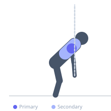
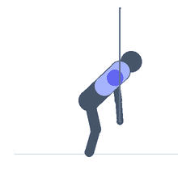

Exercise guide / Band Face Pull
Band Face Pull
The band face pull is a rehabilitation exercise for the posterior deltoid, infraspinatus, and middle trapezius, performed by pulling a resistance band toward the face with elbows flared high. It directly counteracts the internal rotation and forward shoulder posture associated with heavy pressing and prolonged sitting. It is used in rotator cuff rehabilitation, shoulder impingement treatment, and general shoulder health maintenance.
Primary muscles
infraspinatus
posterior deltoid
Secondary muscles
middle trapezius
rhomboids
Stabilizers
lower trapezius
Equipment
Resistance Band (Loop / Mini Band)


Starting position
- Anchor the resistance band loop at face height or slightly above. Grip the band with both hands using a neutral or overhand grip, arms extended in front at shoulder height.
Setup
- Anchor the band at a door frame, rack, or any stable point at face height. Stand far enough back to have tension in the band with arms extended.
Steps
- Step 1: Hold the band with both hands at shoulder width, arms extended toward the anchor.
- Step 2: Pull the band toward the face, leading with the elbows flared outward and upward.
- Step 3: As the hands approach the face, externally rotate the shoulders so the hands splay outward and the elbows point to the sides.
- Step 4: Hold briefly at full contraction — elbows should be at or above shoulder height and hands near the temples.
- Step 5: Slowly extend the arms back to the start under control.
Coaching cues
- Lead with the elbows — pull them back and apart
- Think about showing your armpits at the top
- Squeeze the shoulder blades together at the end of each rep
Breathing
- Exhale as you pull toward the face. Inhale on the return.
Range of motion
- Full extension of the arms at the start, full retraction with elbows flared and hands near face at the end.
Tempo
- 2-second pull, 1-second hold, 2-second return. 15–20 reps × 3 sets.
Common mistakes
- Keeping the elbows low — elbows must flare high to recruit the posterior rotator cuff
- Pulling toward the neck or chest instead of the face
- Excessive torso lean or momentum from the lower body
Safety
- Use a light band for rehabilitation — this is a high-rep, low-load exercise
- If impingement symptoms occur with elbows high, temporarily reduce elbow height
Training
- strength: 15–20 reps
- strength: 2–3 sets
- Rest: {'strength': 60}